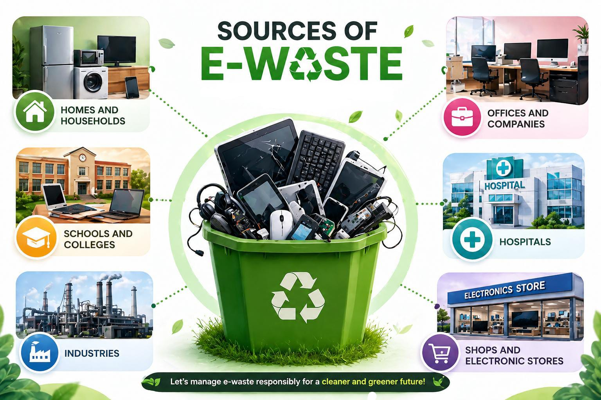

E-waste, or electronic waste, refers to old, broken, or unwanted electronic devices such as computers, mobile phones, televisions, and other electrical equipment. These items are discarded when they are no longer useful or are replaced by newer technology.
It is a growing environmental problem because it contains harmful substances like lead, mercury, and cadmium, which can damage human health and pollute the environment if not disposed of properly. At the same time, it also contains valuable materials such as gold, silver, and copper that can be recovered through recycling.
With the rapid use of technology, the amount of e-waste is increasing every year. Improper disposal, like dumping or burning, can cause serious pollution. Therefore, proper e-waste management and recycling are essential to protect the environment and conserve natural resources.
E-waste can be divided into different categories based on the type of electronic equipment
These are big electronic items used at home
Examples
These are smaller electronic devices used daily.
Examples
These devices are used for communication and information technology.
Examples
These are entertainment-related devices.
Examples

E-waste is generated from many places in daily life.
E-Waste contains both useful and harmful materials.
These harmful substances can damage the environment and human health if not handled properly.
The amount of e-waste is increasing rapidly due to:
Managing e-waste properly is essential to protect the environment and conserve natural resources.